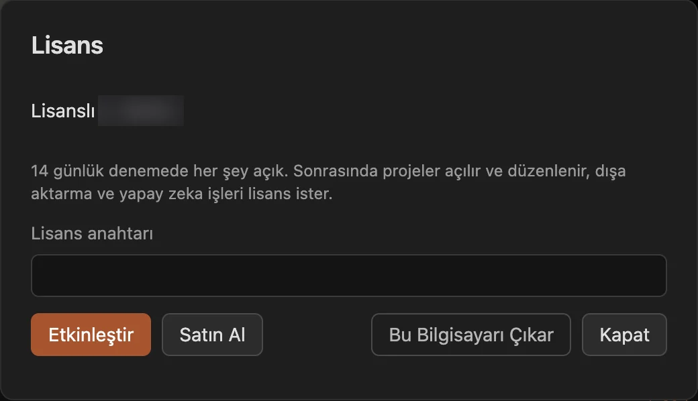

Lisans ve deneme
14 gün boyunca bütün özellikler açık, kart gerekmez. Sonrasında bir lisansla devam edersin.
Deneme
Üst çubuk ne kadar kaldığını gösterir: Deneme: 14 gün kaldı. Lisans penceresini açmak için ona tıkla.
Deneme bitince
Projelerin yine açılır, düzenlemeye devam edebilirsin. Dışa aktarma ve yapay zeka işleri lisans ister. Yaptığın hiçbir şey kaybolmaz.
Satın al
Lisans penceresinde Satın Al'a bas. Ödeme sayfası uygulamanın bir penceresinde açılır ve fiyatı gösterir. Ödeme bitince makbuzdaki lisans anahtarı bu bilgisayarda kendiliğinden etkinleşir. Anahtar e-postayla da gelir.
Anahtarı etkinleştir
Anahtarını Lisans anahtarı alanına yapıştır ve Etkinleştir'e bas. Bu bilgisayarda etkinleştirildi. bunu doğrular, üst çubukta Lisanslı yazar.

İki bilgisayar
Bir lisans iki bilgisayarda çalışır. Üçüncüde kullanmak için önce birini serbest bırak: orada Lisans penceresini aç ve Bu Bilgisayarı Çıkar'a bas. Sonra anahtarı yenisinde etkinleştir.
Çevrimdışı
Kilnframe lisansı ara sıra internet üzerinden kontrol eder. 3 hafta boyunca edemezse bir kez bağlanmanı ister.
Başka bir şey yazıyorsa
- Bu anahtar 2 bilgisayarda kullanılıyor. Önce birinden çıkarın.
- Bu anahtar bulunamadı. Kontrol edip yeniden deneyin.
- Abonelik sona erdi. Dışa aktarma ve yapay zeka işleri için yenileyin.
- Linux'ta anahtar yalnızca uygulamadan çıkana kadar tutuluyorsa çalışan bir anahtar zinciri hizmeti yoktur: GNOME Keyring'i ya da KWallet'i başlat, sonra yeniden etkinleştir.